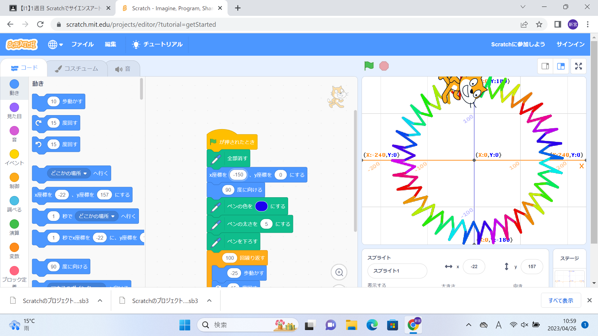
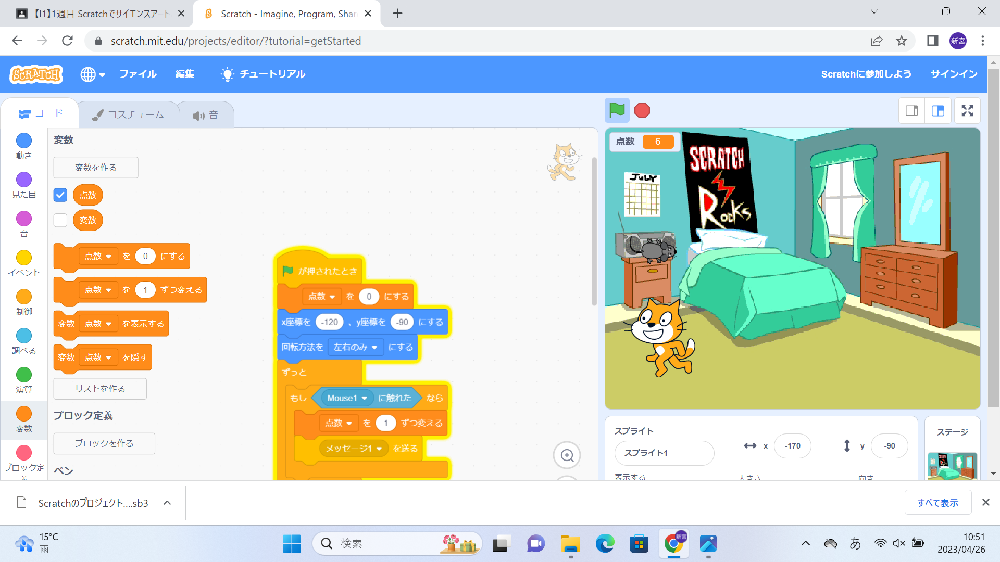

1週目のレポート ： 公大高専１年実習I-1
4a班14番 サイコパスタ
第1週目
1-1 サイエンスアート

1.内容
スクラッチを使って線を書くプログラムを習った。初めは、どのようにして猫を動かすのかを習った。例えばスペースを押すとX座標100に移動する、矢印を押すと動くなど、思っていたよりもシンプルだった。その後いろいろ試行錯誤し、このような形になった。
2.感想
角度、歩数などを変えるだけで様々な模様ができたので、プログラミングは奥が深いものだなと思った。もっと複雑なプログラムを組むと、キャラクターを描いたりすることが出きるのかなと思った。
1-2 ゲーム

1.内容
猫がネズミを捕まえて、それを点数化していくというとてもシンプルなゲームを作った。ネズミが落ちてくるタイミングや場所をランダムにして、よりゲーム性の高いものを作ることができた。
2.感想
ゲームの根本的な作り方を、簡単にだが理解することができた。「スタート」という字を出してみたり、時間制限など設けたりしても面白そうだと思った。自分でほかにもいろいろなゲームを作ってみたい。
1-3 ホームページ作成
私のホームページ
1.内容
簡単なホームページを作った。本当に簡単なものだから、いつもネットで見ているようなものとは程遠い。
2.感想
まだホームページについてはあまり理解ができていない。先生があらかじめ用意してくださっていたものを編集するだけで作れたので、とても簡単に作ることができた。一から作るとなると、とても大変な作業になるのかなと思った。